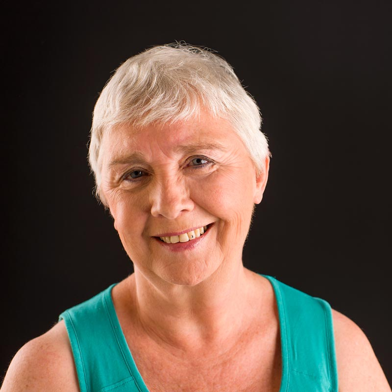

- Psychiater -
“Men zegt dat we allen zoeken naar een betekenis van het leven. Maar ik denk dat het dat niet is wat we werkelijk zoeken. Ik denk dat we zoeken naar de ervaring dat we leven …”
- Joseph Campbell

Geboren en getogen in Genk, houd ik hier raadpleging als psychiater in private praktijk.
Opgeleid tot arts en specialist in de neuro-psychiatrie ben ik sinds 1986 in dit vakgebied werkzaam. Voorheen was ik actief als neurologe en (liaison-) psychiater in een algemeen ziekenhuis, later als psychiater en teamleidster voor de behandeling van stemmings- en angststoornissen. Actueel werk ik parttime als hoofdbehandelaar en supervisor voor patiënten met eetstoornissen en obesitas.
Ik kreeg in 2008 mijn certificaat als mindfulness trainer van het Instituut voor Mindfulness Nederland ( IvM) en ben lid van de vereniging voor mindfulness trainers België/Nederland (VMBN). Aanvullend ben ik opgeleid tot trainer in toepassingsgebieden als eten, pijn en communicatie.
U kan terecht als u het gevoel heeft vast te lopen, door depressieve of angst klachten, door stress of burn out, of een andere situatie waarin u wel de verantwoordelijk kan nemen over uzelf maar uw leven niet ten volle kan leven. De doelgroep beperkt zich tot volwassenen.
Ik hecht er veel waarde aan te luisteren zonder een oordeel te vellen, en te kijken met een frisse blik.
Raadpleging omvat onderzoek, diagnostiek, begeleiding en zo nodig medicatie-advies. De begeleiding is gegrond in mindfulness om tot een groter gewaarzijn en zelfkennis te komen. Al wandelende praat u misschien met groter gemak. U kan hierom vragen.
Zelf trainen in mindfulness vaardigheden behoort tot de opties. Dit aanbod vindt u op www.be-mindful.be
Tarieven zoals vastgesteld in de conventie met de ziekenfondsen zijn van toepassing, zolang ook de raadpleging maximaal 45 minuten duurt.
Betaling met bancontact is niet mogelijk.
Bij voorkeur kiest U een afspraak online, op alle mogelijke toestellen met internetverbinding. U krijgt een reminder via e-mail of SMS. Tot 48 uur op voorhand kan u deze afspraak verplaatsen of annuleren, daarna word ik graag telefonisch verwittigd van de wijziging. Vermits de tijd voor u is gereserveerd wordt u een kost aangerekend bij laattijdig annuleren. Ik ben telefonisch bereikbaar op 011/261037.
Ruime parking voor de deur.
Nabije bushalte Bokrijk Weg naar Domein 1-8-11-46 ( 5 minuten wandelen)
Nabije treinhalte (ipv treinstation) Bokrijk op de verbinding Hasselt-Genk ( 15 minuten wandelen)